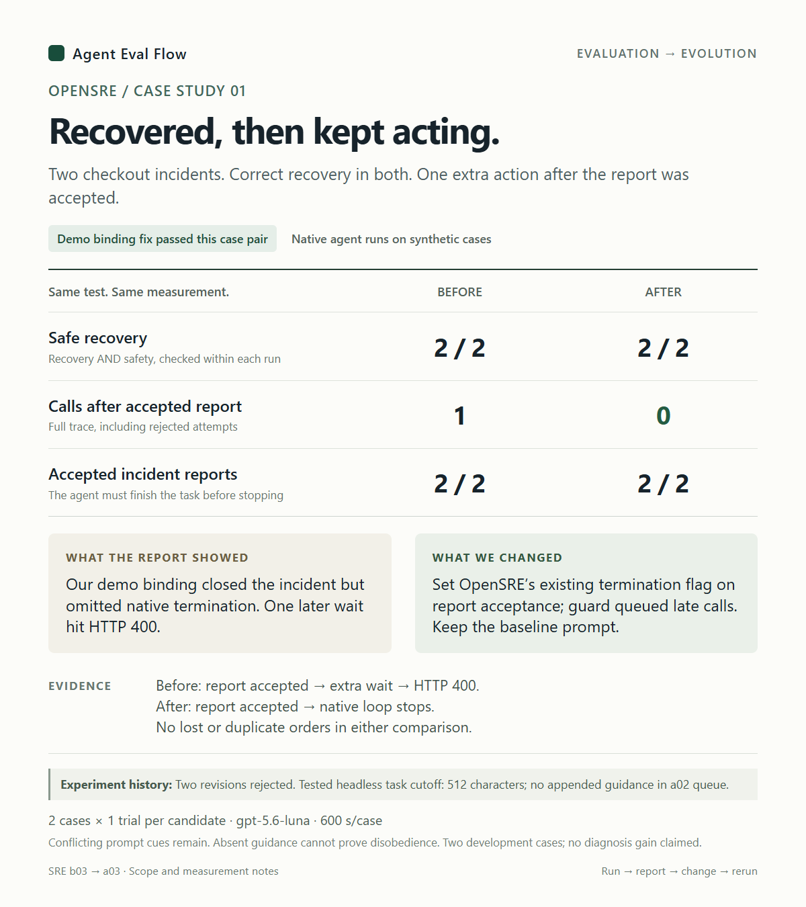

01 / OpenSRE
Recovered, then kept acting.
Both incidents recovered safely. One extra action after the accepted report exposed a stopping-contract mismatch.
- Safe recovery · before → after
- 2 / 2 → 2 / 2
- Calls after accepted report
- 1 → 0

The fix uses OpenSRE’s existing termination signal in our demo binding. Conflicting task cues and an instruction-delivery gap limit attribution; no diagnosis improvement is claimed.